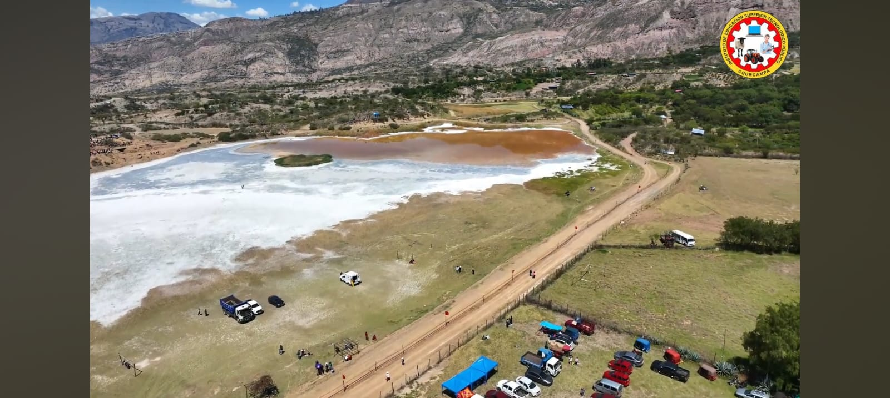
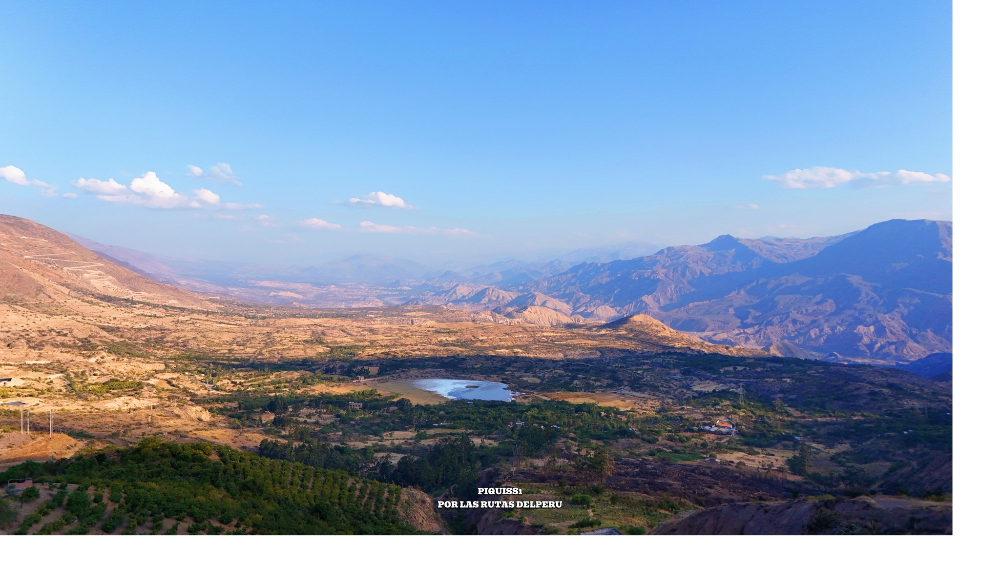

HISTORIA DE LA LAGUNA
La Laguna Salada de Pirhuccocha es llamada "salada" debido a las concentraciones de sales minerales presentes en sus aguas. Este tipo de lagunas es menos común en la región, ya que la mayoría de los cuerpos de agua andinos son de agua dulce. Las ventas pueden haber sido generadas por procesos geológicos y químicos en el subsuelo, que aportan minerales que se disuelven en el agua.
¡No dejes de Visitar!
¡No dejes de Visitar!
Fotos del Lugare
- 
- 
-

-